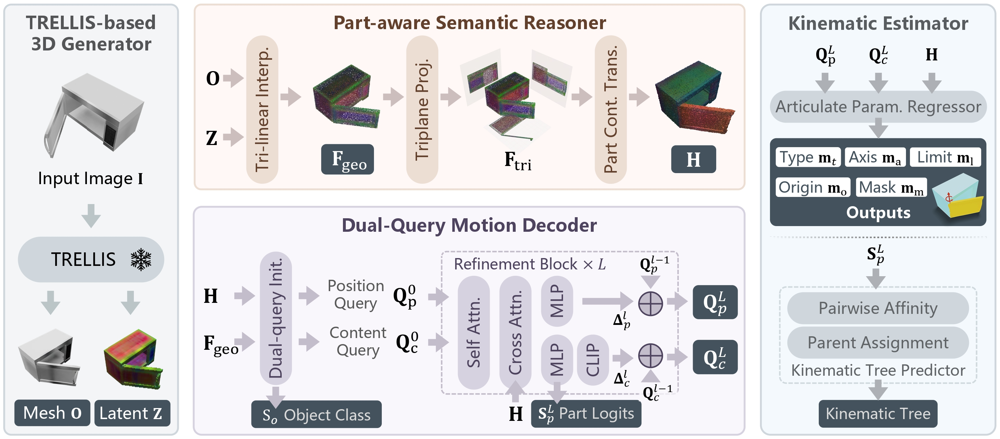
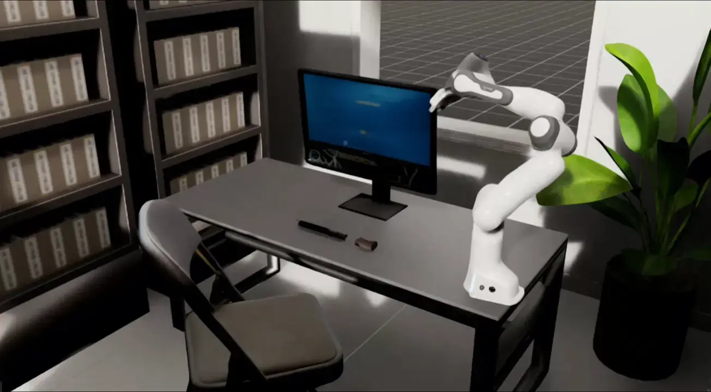
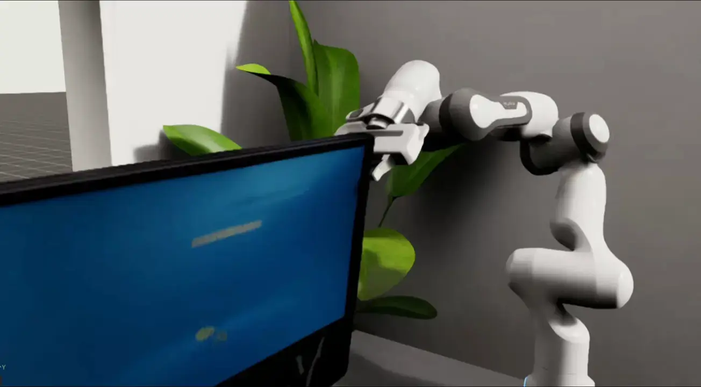
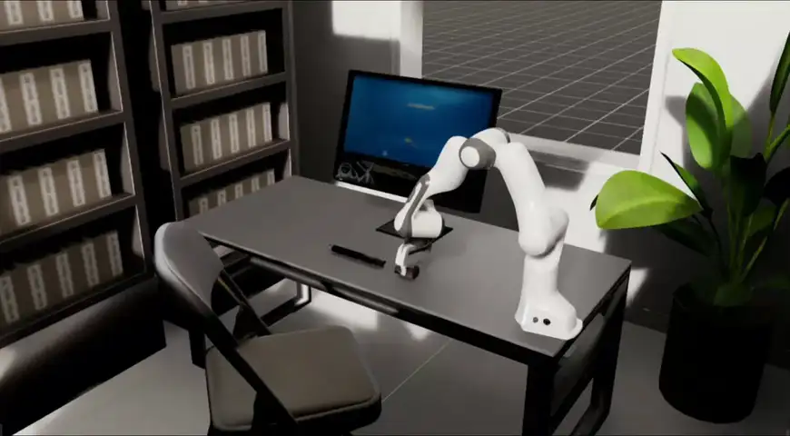
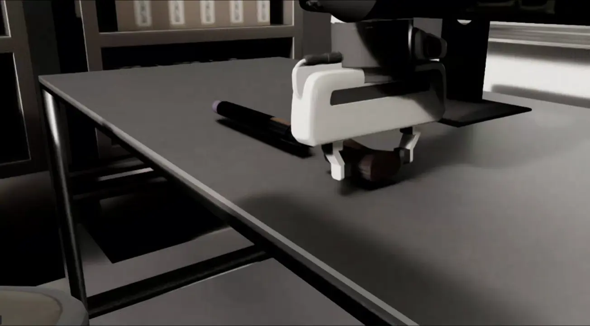
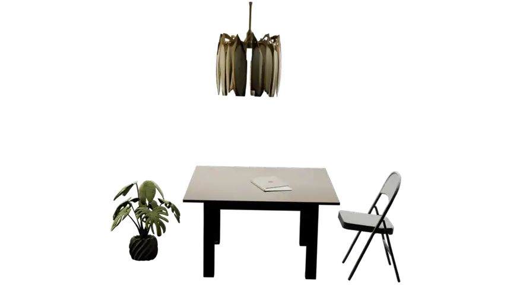
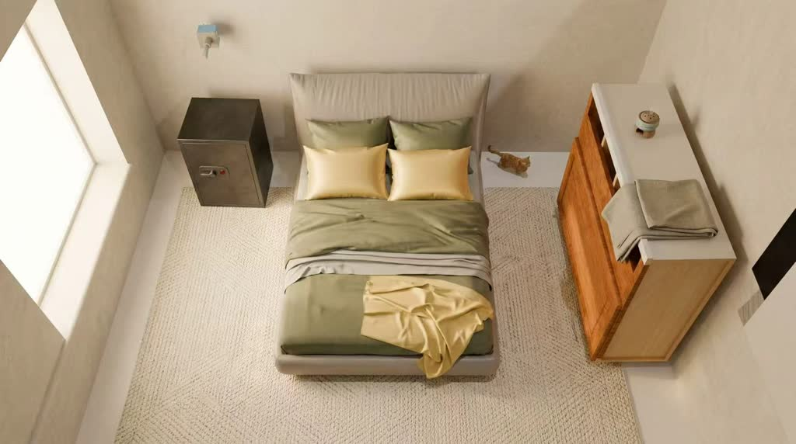
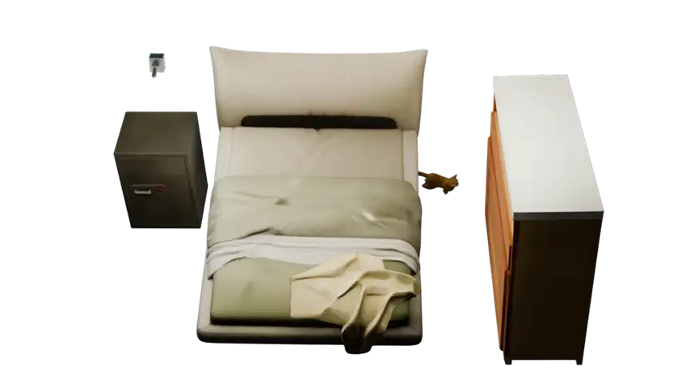

Reconstructing articulated 3D objects from a single image requires jointly inferring object geometry, part structure, and motion parameters from limited visual evidence. A key difficulty lies in the entanglement between motion cues and object structure, which makes direct articulation regression unstable. Existing methods address this challenge through multi-view supervision, retrieval-based assembly, or auxiliary video generation, often sacrificing scalability or efficiency. We present MonoArt, a unified framework grounded in progressive structural reasoning. Rather than predicting articulation directly from image features, MonoArt progressively transforms visual observations into canonical geometry, structured part representations, and motion-aware embeddings within a single architecture. This structured reasoning process enables stable and interpretable articulation inference without external motion templates or multi-stage pipelines. Extensive experiments on PartNet-Mobility demonstrate that MonoArt achieves state-of-the-art performance in both reconstruction accuracy and inference speed. The framework further generalizes to robotic manipulation and articulated scene reconstruction.

Overview of MonoArt. Given a single input image, TRELLIS-based 3D Generator reconstructs a canonical 3D shape. Part-aware Semantic Reasoner derives tri-plane-based part embeddings through tri-linear interpolation, triplane projection, and a part contrast transformer. Dual-Query Motion Decoder initializes position and content queries and performs iterative motion reasoning through refinement blocks. Kinematic Estimator predicts part-level articulation parameters (motion type, origin, axis, limits) and infers the kinematic tree structure via pairwise affinity and parent assignment.
MonoArt infers articulation axes, joint types, and motion limits that can be directly used for robotic control. The reconstructed objects are imported into IsaacSim and manipulated by a Franka robot arm for contact-rich tasks such as grasping and opening, enabling a practical real-to-sim pipeline.




Robot manipulation with generated articulated objects. MonoArt reconstructions are directly imported into IsaacSim for contact-rich interaction.
By combining MonoArt with SAM3D, we recover geometry and articulation parameters for each object instance using per-object masks and 6D poses. The articulated objects are placed back into the scene, converting rigid reconstructions into functionally operable environments.



Articulated scene reconstruction. MonoArt augments SAM3D with object-level articulation recovery to produce articulated, operable 3D scenes.
{% raw %}@inproceedings{li2026monoart,
title = {MonoArt: Progressive Structural Reasoning for Monocular Articulated 3D Reconstruction},
author = {Li, Haitian and Xie, Haozhe and Xu, Junxiang and Wen, Beichen and Hong, Fangzhou and Liu, Ziwei},
booktitle = {European Conference on Computer Vision (ECCV)},
year = {2026}
}{% endraw %}